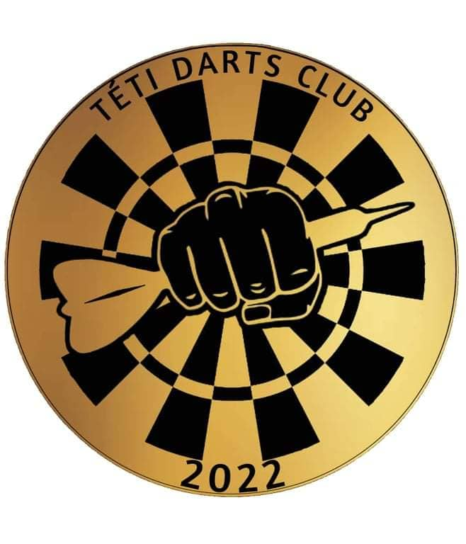
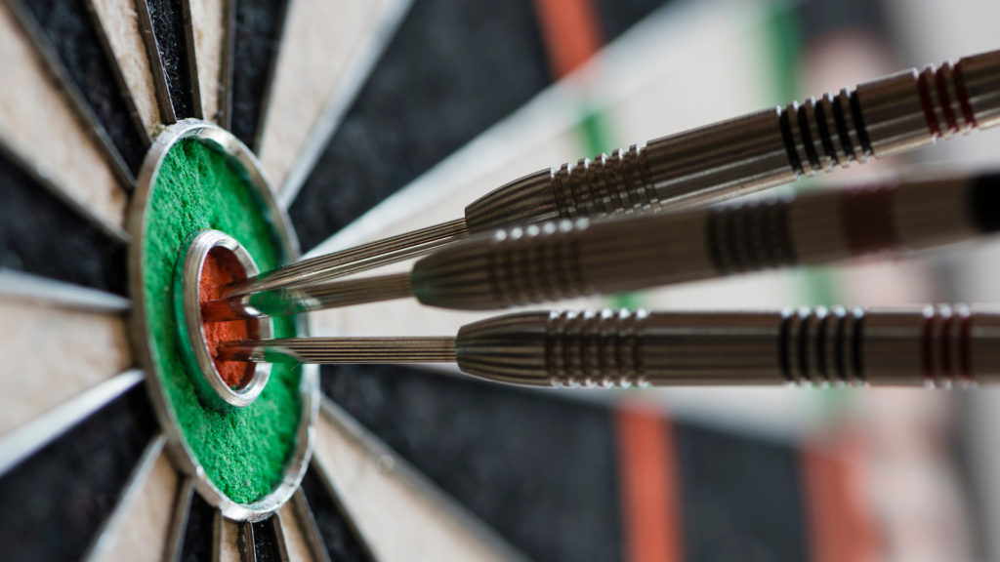

A Téti Darts Club oldala

A képen a Darts Egyesületünk logója látható. A logó egy dartstáblát ábrázol, melyen egy kéz látható, amint egy darts nyilat "szorongat".

Ezen a képen a darts egyik legnehezebb kiszállója, egy 3 50-es szektort igénylő 150-es kiszállót örökítettek meg.
Utoljára, pedig egy táblát mutatunk be, mely a sokak által ismert Steel tábla. Fontos kiemelni hogy létezik műanyag tábla is, de az nem annyira elterjedt.